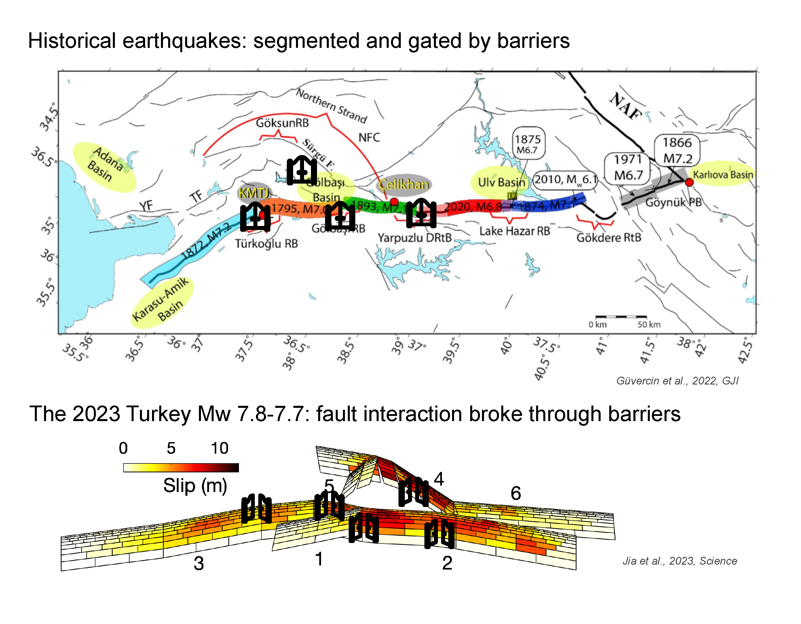
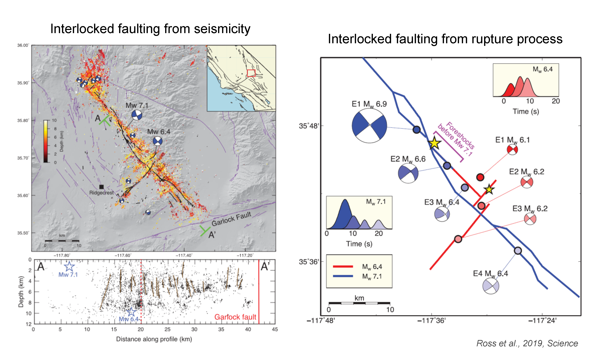
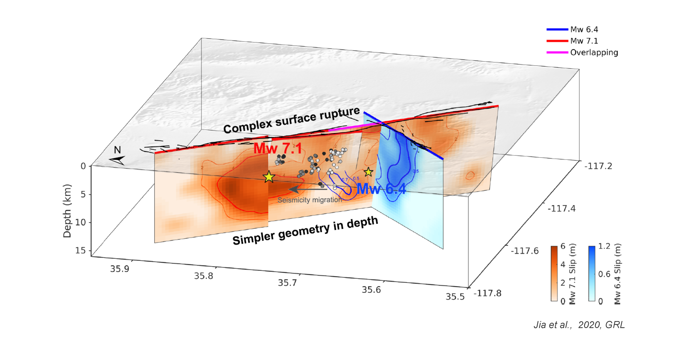
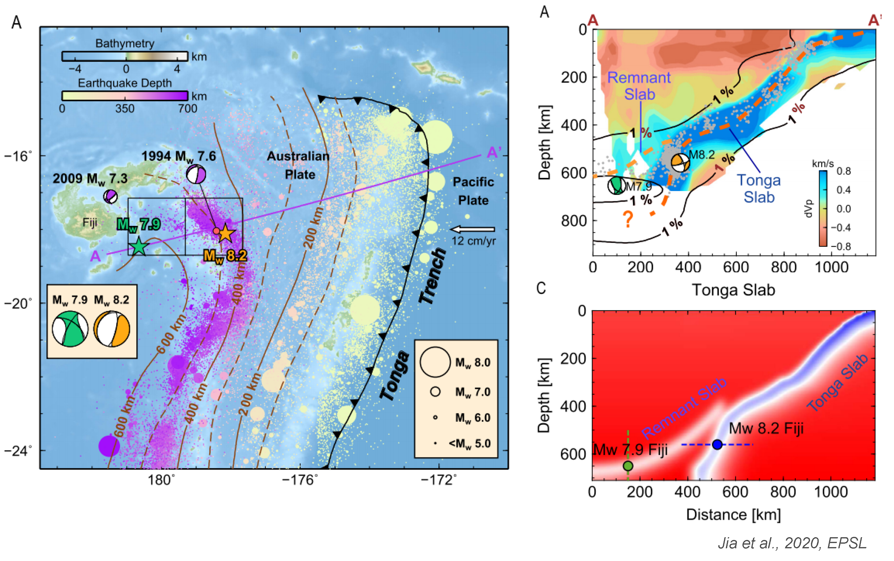
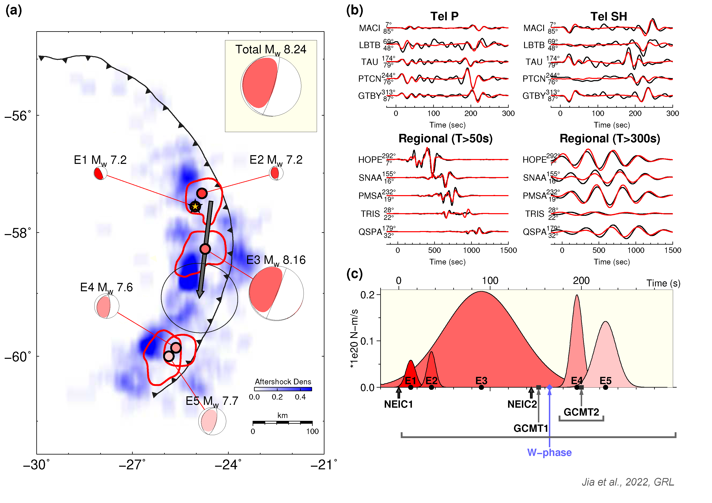
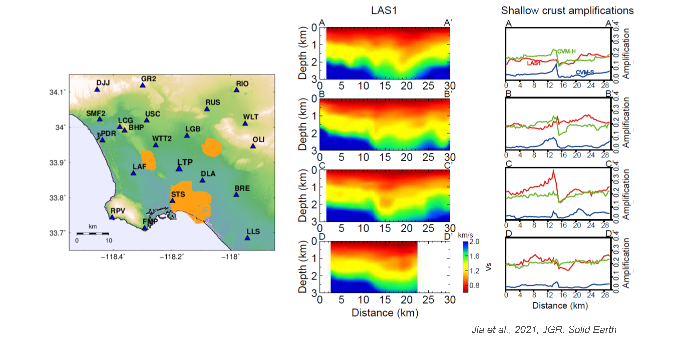
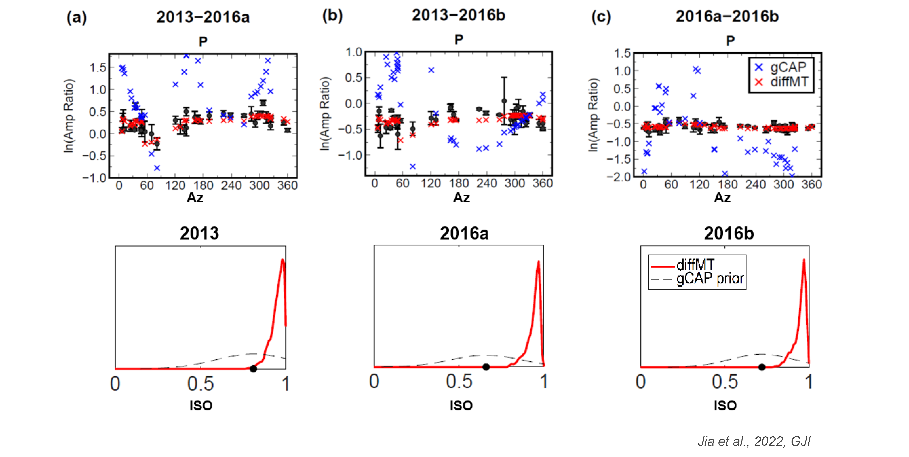
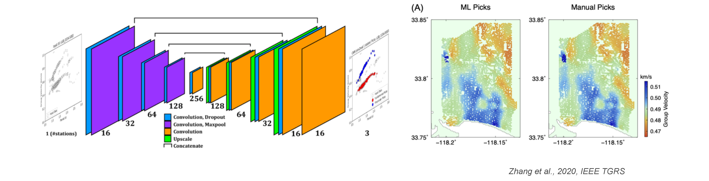

Life of Earthquakes
- Why earthquakes so large? Stress interactions promoted "domino-effect" ruptures, which broke multiple barriers and led to devastating Turkey earthquakes.
- How unexpected the way earthquakes can rupture? Interlocked orthogonal faulting of the 2019 Ridgecrest sequence.
- Varying fault geometry, both near the surface and at greater depths, significantly impacts the earthquake rupture behaviors.

There was a pair of major earthquakes in Turkey this year that caused a lot of destruction and fatalities (one of the deadliest disasters in the region in historic times). The sequence was unusual because the two earthquakes were almost of the same size (called a “doublet”), which compounded the damage. The earthquakes occurred on known faults, and in this sense were expected. What was unexpected was their size - they were much bigger than any known past earthquakes on the same faults. This happened because of an unlikely “cascade” that broke through various fault bends and step-overs that normally would act as barriers stopping the rupture propagation. While conventional studies and responses usually focus on particular data and aspects of earthquakes, we unveiled a holistic synthesis of diverse and rich data sets and state-of-the-art earthquake interpretation tools, ends up with finding both earthquakes branched and jumped in unexpected ways, in which stress interactions and static and dynamic triggering worked together to result in a cascade of rupture with a larger than usual total rupture length and greater destruction potential. The unusually complex dynamics of the Turkey earthquakes call for reassessment of common assumptions built into seismic hazard assessments. Additionally, there are strong similarities between the fault system that ruptured in Turkey and many other places with similar fault architecture in the world, such as California. See our paper for more details.

In July 2019, a strong earthquake sequence struck the Ridgecrest city and broke the seismic quiescence of Southern California. For quick regional hazard response, it is necessary to integrate the understanding of the earthquake source processes and regional fault structures. Through analyzing seismograms from near and far fields, we found that the Mw 6.4 foreshock on July 4 is composed of three subevents on interlocked orthogonal faults. The Mw 7.1 mainshock on July 6 ruptured towards northwest and southeast, and stopped at bifurcation and horsetail faultings. The Mw 6.4 foreshock ruptured towards the hypocenter of the Mw 7.1 mainshock but stopped at a distance of ~4km. The gap was gradually filled by a series of small earthquakes before the Mw 7.1 mainshock, suggesting that the Mw 6.4 foreshock triggers seismic activities that continuously eroded this 4 km barrier, and eventually induced the occurrence of a 7.1 magnitude earthquake. The multi-fault ruptures are rarely considered in seismic hazards, but the Ridgecrest sequence calls for a re-assessment. See our paper for more details.

Large earthquakes are often complicated, especially if they occur in relatively immature fault systems. As a good example, the 2019 Ridgecrest sequence ruptured multiple subparallel or orthogonal surface fault traces. How the surface complexities extend to depth and impact earthquake rupture processes is critical for understanding earthquake physics and hazard but hard to assess. By combining a rich dataset of ground shaking (strong motion data, broadband seismograms) and deformation (high rate GPS, InSAR) with realistic 3D structure considered, we found that the ruptures are substantially simpler at depth than near the surface, with four faults explaining all the data reasonably well. Interestingly, both the foreshock and the mainshock started at fault junctions and then ruptured multiple faults. Where the two events overlapped, their slip patterns are largely complementary to each other. See our paper for more details.
Dynamics in the Earth
- Mega-annum-term subduction slab dynamics shape the local temperature and governs the deep earthquake rupture properties.

The Fiji-Tonga subduction zone accounts more than 75% of global deep earthquakes, but lacked large ones (M~8). This puzzling deficit was changed by a pair of Fiji-Tonga M8 earthquakes in two weeks, 2018. We analyzed the focal mechanisms, rupture processes, aftershock seismicity and thermal properties, and found that the doublet events may have ruptured in two distinct slabs, even though they are only ~250 km from each other! The August M8.2 event occurred in the Tonga slab while the September M7.9 event ruptured in a warm detached Australian slab leaning on the Tonga slab. The 2018 Fiji M8 doublet reflects the complex interaction of slabs near the bottom of the mantle transition zone, and also emphasizes local slab temperature's primary control on deep earthquake ruptures and aftershocks. See our EPSL paper and GRL paper for more details.
Natural hazards
- What an earthquake can hide? A seemingly Mw 7.5 earthquake hides its slow rupture episode, which causes a silent yet powerful Mw 8.2 global tsunami.
- The Los Angeles Basin could be more prone to shakings when earthquakes happen, revealed from high-resolution structure imaging using > 16,000 seismic stations.

The 2021 August South Sandwich Island Mw 8.2 earthquake was a surprise, because it was initially reported as a magnitude 7.5 event at a deep depth (47 km) but generated a global-spreading tsunami that would only be expected for a larger and shallower event. By using seismic data with period as long as 500s, we revealed a hidden Mw 8.16 shallow slow event that happened between clusters of regular ruptures in the beginning and end. Although the slow event contributed 70% of the seismic moment, lasted three minutes, and ruptured a 200-km section of the plate interface, it is essentially invisible at short or intermediate periods, which explains its anomalously low body-wave and surface-wave magnitudes. The 2021 South Sandwich Island earthquake represents an extreme example of the broad spectral behaviors of subduction zone earthquakes and calls for attention in the research and warning of similar events. See our paper for more details.

The shallow velocity structure of the Los Angeles (LA) Basin plays an important role in the seismic hazard of this populated area. But most existing velocity models of the LA Basin have limited resolution due to the sparsity of seismic stations, or the restricted coverage of sonic logging and industry reflection profiles. We took a small step forward by combining the aperture of broadband seismic stations and density of industrial nodal arrays, and derive a 3D shear wave velocity model, covering a large portion of the central LA Basin for the depths shallower than 3 km. We found that the small scale heterogeneities are better resolved compared with the conventional models. We also captured the presence of the Newport-Inglewood fault by a NW-SE trending high velocity belt. Our model could better predict the variations in the shallow crustal amplifications, which can improve strong ground motion simulations. See our paper for more details.
Technical development for sustainable resilience
- Bayesian differential moment tensor inversion for more accurate focal mechanisms.
- Deep learning-based automated dispersion picking for big data seismic tomography.

Moment tensors are key to seismic discrimination but often require accurate assumption on the Earth structure for estimation. This limits the data availability and the precision of moment tensor inversions. To overcome this difficulty, we develop a differential moment tensor inversion (diffMT) method that uses relative measurements to remove the Earth's structural effects shared by clustered events, thereby improves the accuracy of source parameters. In a Bayesian framework, we invert the body- and surface-wave amplitude ratios of an event pair for refined moment tensors. Applications to three North Korea nuclear tests from 2013 to 2016 demonstrate that diffMT reduces the uncertainties substantially compared with the traditional waveform-based moment tensor inversion. Our results suggest high percentages of explosive component with similar double-couple components for the North Korea nuclear tests. See our paper for more details.

Dispersive surface waves have been important and extensively used for understanding the Earth's structure, since surface waves can be easily extracted from ambient noise correlations and does not depend on a suitable earthquake distribution. However, picking the dispersion curves can be very labor-intensive, particularly when dealing with dense arrays. Here, we develop a machine learning based algorithm to automatically extract surface wave dispersion curves. We first convert the standard frequency-time analysis of seismograms into images, then use a convolutional neural network to drive a supervised learning. Our results show that the machine classification is nearly identical to the human picked phases. See our paper for more details.